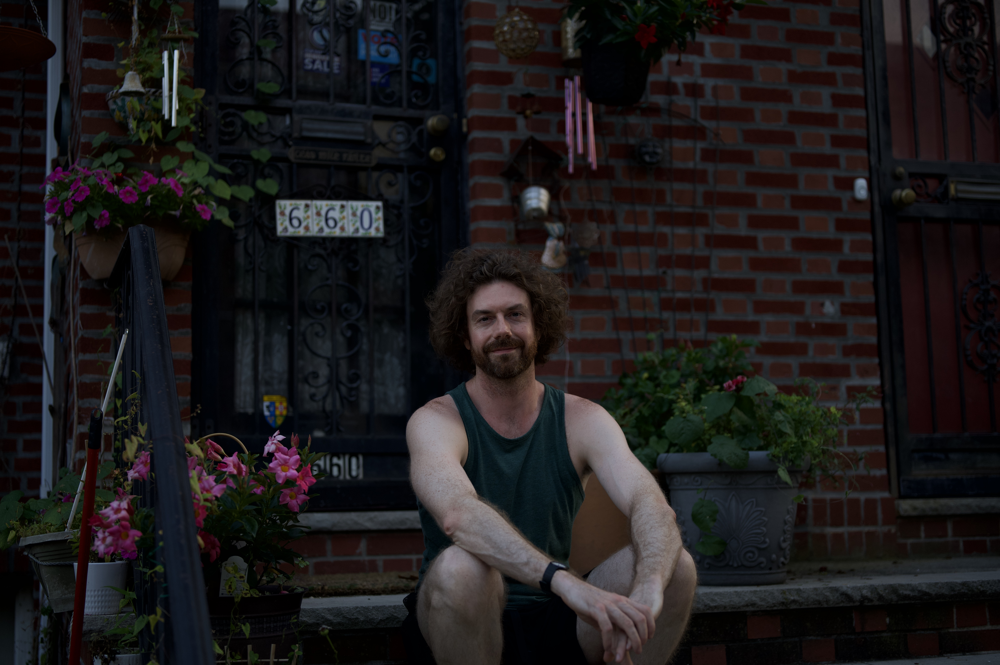
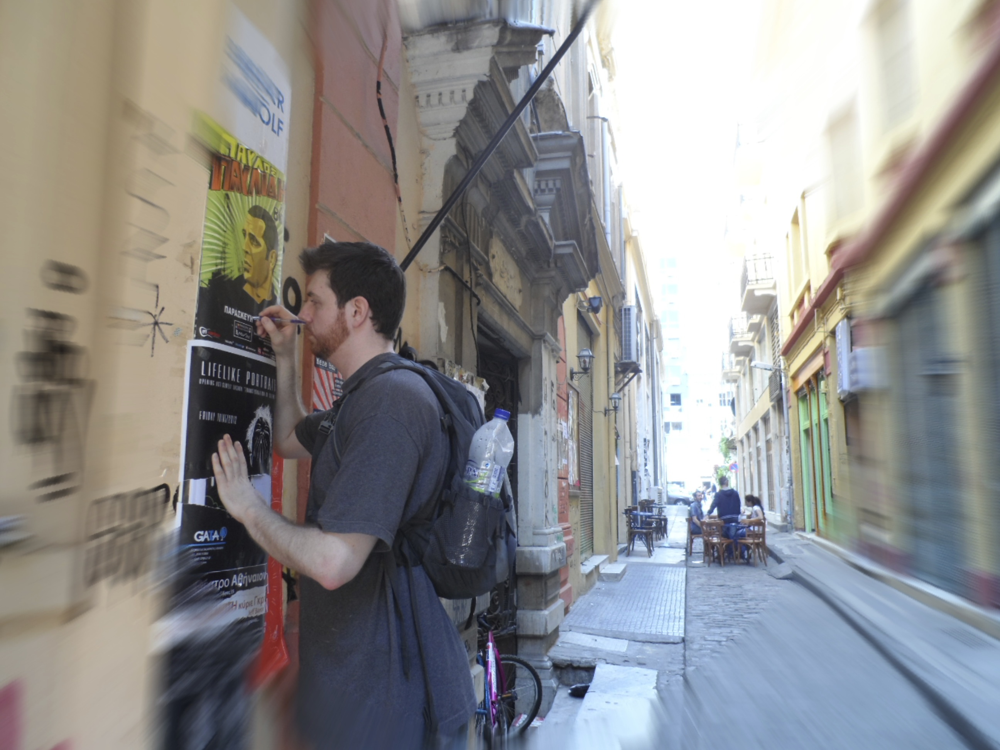

Flaneur 718
KODAK PORTRA 400
ISO 400 • 35mm
KODAK PORTRA 400
15A
22
8A
15
→15A
22
→8A

15A
22

8A
KODAK TRI-X 400
400TX • 35mm
KODAK TRI-X 400
31
12
→31
12A
31
12
ILFORD HP5 PLUS
ISO 400 • 35mm
ILFORD HP5 PLUS
27
19A
5
27
→19A
5A

27
19A
5
documenting the human condition through street photography throughout this earth